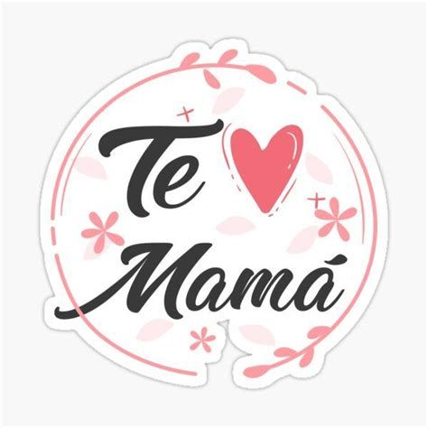

Te amo viejita 💖
Hola mami, quiero hacer este pequeño gesto porque aunque no soy el hijo perfecto y puedo llegar a ser testarudo, además de dificil de manejar deseo decirte que te amo con cada parte de mi corazón.. Eres la mujer por la cual mi inspiración nunca se pierde, por ello dejame decirte que si existe otra vida despues de esta y se me permitiese elegir quien sería mi madre ten por seguro que te elegiría a ti una y mil veces.. Te amo viejita.